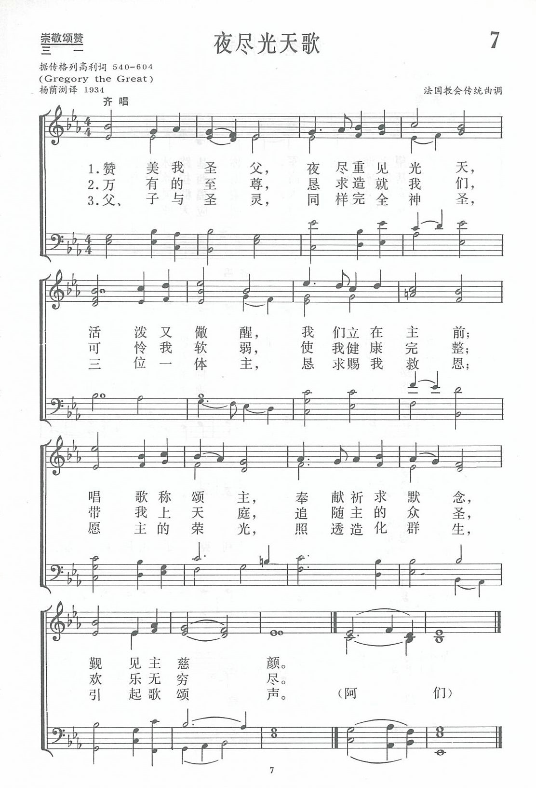
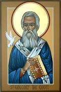
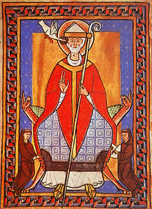

|
|
|
|
1 Father, we praise you, now the night is over, 2 Monarch of all things, fit us for your mansions; 3 All-holy Father, Son, and equal Spirit, |
第007首《夜盡光天歌》 |
|
https://www.zanmeishige.com/tab/13638.html?songbook=1&index=7
 Father, we praise thee, now the night is over
|
|
|
|
|


第7首 夜尽光天歌 https://youtu.be/4MSW4M-aejI -
Father, We Praise Thee, Now the Night is Over https://youtu.be/Qg4xN5nNQX4 - Father, We Praise Thee, Now the Night is Over (Christe
Sanctorium)
https://youtu.be/RGD_PZCOXuw
| Text: | Father, We Praise You |
| Author: | Gregory I, 540-604 |
| Translator: | Percy Dearmer, 1867-1936 |
| Tune: | CHRISTE SANCTORUM |
| Short Name: | Pope Gregory I |
| Full Name: | Gregory I, Pope, ca. 540-604 |
| Birth Year: | 540 |
| Death Year: | 604 |
Gregory I., St., Pope. Surnamed The Great.

Was born at Rome about A.D. 540. His family was distinguished not only for its rank and social consideration, but for its piety and good works. His father, Gordianus, said to have been the grandson of Pope Felix II. or III., was a man of senatorial rank and great wealth; whilst his mother, Silvia, and her sisters-in-law, Tarsilla and Aemiliana, attained the distinction of canonization. Gregory made the best use of his advantages in circumstances and surroundings, so far as his education went. "A saint among saints," he was considered second to none in Rome in grammar, rhetoric, and logic. In early life, before his father's death, he became a member of the Senate; and soon after he was thirty and accordingly, when his father died, he devoted the whole of the large fortune that he inherited to religious uses. He founded no less than six monasteries in Sicily, as well as one on the site of his own house at Rome, to which latter he retired himself in the capacity of a Benedictine monk, in 575. In 577 the then Pope, Benedict I, made him one of the seven Cardinal Deacons who presided over the seven principal divisions of Rome.
The following year Benedict's successor, Pelagius II, sent him on an embassy of congratulation to the new emperor Tiberius, at Constantinople. After six years' residence at Constantinople he returned to Rome. It was during this residence at Rome, before he was called upon to succeed Pelagius in the Papal chair, that his interest was excited in the evangelization of Britain by seeing some beautiful children, natives of that country, exposed for sale in the slave-market there ("non Angli, sed Angeli"). He volunteered to head a mission to convert the British, and, having obtained the Pope's sanction for the enterprise, had got three days' journey on his way to Britain when he was peremptorily recalled by Pelagius, at the earnest demand of the Roman people.
In 590 he became Pope himself, and, as is well known, carried out his benevolent purpose towards Britain by the mission of St. Augustine, 596. His Papacy, upon which he entered with genuine reluctance, and only after he had taken every step in his power to be relieved from the office, lasted until 604, when he died at the early age of fifty-five. His Pontificate was distinguished by his zeal, ability, and address in the administration of his temporal and spiritual kingdom alike, and his missionaries found their way into all parts of the known world. In Lombardy he destroyed Arianism; in Africa he greatly weakened the Donatists; in Spain he converted the monarch, Reccared: while he made his influence felt even in the remote region of Ireland, where, till his day, the native Church had not acknowledged any allegiance to the See of Rome. He advised rather than dictated to other bishops, and strongly opposed the assumption of the title of "Universal Patriarch" by John the Faster of Constantinople, on the ground that the title had been declined by the Pope himself at the Council of Chalcedon, and declared his pride in being called the “Servant of God's Servants." He exhibited entire toleration for Jews and heretics, and his disapproval of slavery by manumitting all his own slaves. The one grave blot upon his otherwise upright and virtuous character was his gross flattery in congratulating Phocas on his accession to the throne as emperor in 601, a position the latter had secured with the assistance of the imperial army in which he was a centurion, by the murder of his predecessor Mauricius (whose six sons had been slaughtered before their father's eyes), and that of the empress Constantina and her three daughters.
Gregory's great learning
won for him the distinction of being ranked as one of the four Latin
doctors, and exhibited itself in many works of value, the most important of
which are his Moralium Libri xxxv., and his two books
of homilies on Ezekiel and the Gospels.
His influence was also great as a preacher and many of his sermons are still
extant, and form indeed no inconsiderable portion of his works that have
come down to us. But he is most famous, perhaps, for the services he
rendered to the liturgy and music of the Church, whereby he gained for
himself the title of Magister Caeremoniarum. His Sacramentary,
in which he gave its definite form to the Sacrifice of the Mass, and his Antiphonary,
a collection which he made of chants old and new, as well as a school called Orplianotrophium,
which he established at Rome for the cultivation of church singing, prove
his interest in such subjects, and his success in his efforts to render the
public worship of his day worthy of Him to Whom it was addressed. The Gregorian
Tones, or chants, with which we are still familiar after a lapse of
twelve centuries, we owe to his anxiety to supersede the more melodious and
flowing style of church music which is popularly attributed to St. Ambrose,
by the severer and more solemn monotone which is their characteristic.
The contributions of St. Gregory to our stores of Latin hymns are not
numerous, nor are the few generally attributed to him quite certainly proved
to be his. But few as they are, and by whomsoever written, they are most of
them still used in the services of the Church. In character they are well
wedded to the grave and solemn music which St. Gregory himself is supposed
to have written for them.
The Benedictine editors credit St. Gregory with 8 hymns, viz. (1) “Primo dierum omnium;" (2) "Nocte surgentes vigilemus;" (3) "Ecce jam noctis tenuatur tunbra;" (4) “Clarum decus jejunii;" (5) "Audi benigne conditor;" (6) "Magno salutis gaudio;" (7) “Rex Christe factor omnium;" (8) "Lucis Creator Optime." Daniel in his vol. i. assigns him three others. (9) “Ecce tempus idoneum;" (10) "Summi largitor praemii;" (11) "Noctis tempus jam praeterit." For translations of these hymns see under their respective first lines. (For an elaborate account of St. Gregory, see Smith and Wace's Dictionary of Christian Biography.)
[Rev. Digby S. Wrangham, M.A.]
-- John Julian, Dictionary of Hymnology (1907)
Notes
Nocte
surgentes vigilemus omnes, p. 809, i. Additional versions are:—
1. Christ's loving children, for His hope abiding,
an adaptation in the Tattendon Hymnal, 1899, No.
49, marked as " English by R. B."
2. Father, we praise Thee, now the night is over,
by P. Dearmer, in The English Hymnal, 1906, No.
165.
3. Here in the House of God we take our station,
in the Office Hymn Book , 1889, No.
703. In the New Office Hymn Book, 1905, No. 158,
it begins, "Lo! with the morn¬ing here we take our station." [Rev. James
Mearns, M.A.]
--John Julian, Dictionary of Hymnology, New Supplement (1907)
Tune Information
| Title: | CHRISTE SANCTORUM (53432) |
| Meter: | 11.11.11.5 |
| Incipit: | 53432 13455 65567 |
| Key: | D Major |
| Source: | La Feillée, Méthode du plain-chant, 1782 |
| Copyright: | Public Domain |
第7首 夜尽光天歌 Father , we praise Thee,now the night is over
经文：“黑夜已深，白昼将近；我们就当脱去暗昧的行为，带上光明的兵器”(罗l3：12)。
这首诗起源很早。早在圣安布罗斯(St．Ambrose，34O一397)时，教会中规定了一年中不同节日所应唱的歌曲，这些歌曲都是以拉丁文唱的。这首诗可能就是古代教会中唱的诗，经格列高利修订后，流传至今。圣格列高利(St．Gregory I，约54O一604)，又称大格列高利，是欧洲从古代到中世纪的转折时期的伟大政治家、神学家、音乐家，青年时代学过法律，曾任罗马行政长官，但他终于舍弃名利，将全部财产捐给了修道院，并自任院长。59O年起任教皇驻君士坦丁堡代表，在伦巴底族人侵罗马城时，他施展他的能力和威望，挽狂澜于既倒，保全了欧洲文化，奠定了基督教在欧洲的统治基础。
格列高利对于教会音乐也有很大的贡献。他综合了犹太教的圣殿崇拜、希腊的歌剧与颂诗，以及教会原有的群众歌咏，在音乐体裁上集成了属于单声部歌调(又称“平咏”)①.
这首《夜尽光天歌》是修道士们于夜间盼望天明时所唱的。每当夜尽天明、晨光熹微时，修道士们共聚圣堂歌唱称颂主；其中也含有儆醒等候主再来的寓意。按当时思想，救主再来虽然如此迟延(路12：35—4O)，但当信徒引颈长望时，必能以克服肉体的软弱，来达到健全完整；最后的快乐乃是得以上升天庭，追随主的众圣。也正是这种信仰，带领了中世纪的信徒在黑暗之中看见了光明，欣然负起生活重任，在当时如同明灯照耀。
格列高利的“平咏”至今在天主教崇拜中仍沿用不衰。其中有若干唱段经近代音乐家修改后，也已成为基督教圣诗的重要组成部分。如第98首《奇妙十架歌》所用曲调《汉堡》便是梅森博士根据格列高利“平咏”修改作成的。
格列高利还曾亲自教唱，他指挥用的小棒至今还在罗马教廷博物馆中展览着。
《夜尽光天歌》的曲调是来自古代教会中的启应对唱曲(Antiphone，参阅第66首)，是从1681年法国所出版的《启应对唱曲唱法集》中引来，但并不是法国传统曲调，而是取材于法国出版的古代教会启，应对唱诗集，原曲调名叫《CHRISTE SANCTORUM》。
①平咏(Plain Song)，也有译作“素歌”，是一种平稳的单声部歌调，节奏比较自由。它不分小节，没有伴奏，为古代基督教会中所用的赞美歌曲。
通常包括两种主要乐曲：一是供特定的弥撒(圣餐)用，一是供每日定时祈祷时所唱诵的歌曲。
经文参考
约翰福音 14:2罗马书 13:11-12以弗所书 5:18-20歌罗西书 3:16
帖撒罗尼迦前书 5:23启示录 5:11-137:9-17
"FATHER, WE PRAISE THEE" hymnstudiesblog
"It is a good thing to give thanks unto the LORD…to shew forth Thy lovingkindness in the morning…" (Ps. 92.1-2)
INTRO.:
A song which expresses thanks to the Lord for the coming of the morning is "Father, We Praise Thee." The text is taken from the medieval Latin office hymn "Nocte surgente vigilemus omnes." It is often attributed to Gregory the Great, who was born at Rome, Italy in A.D. 540, of wealthy and pious parents. His father was Gordianus, of senatorial rank, and his mother was Silvia. Receiving a good education, he became a member of the Roman senate, but after his father’s death, he used his immense fortune for religious purposes and joined the Benedictine order. As a monk, Gregory began systematizing church music of his day, and the date of c. 580 is given for these words. Succeeding Pelagius as "bishop of Rome" in A.D. 590, he was known as Gregory I. It was Gregory who sent Augustine to Britain in A.D. 597, bringing Christianity to that island. Gregory also completed and authorized the liturgy of the Western church, thus giving his name to "Gregorian chant." He died at Rome in A.D. 604.
Although the hymn is usually ascribed to Gregory, there is no real evidence of his authorship. Some scholars credit it to Alcuin of York (A.D. 730-804). He was the leading intellectual at Charlemagne’s court. It is possible that Alcuin may have produced the Latin poem as we know it based on thoughts written earlier by Gregory. The tune (Christe Sanctorum) is an ancient plainsong melody that first appeared anonymously in the Paris Antophoner of 1681. It was adapted for congregational use in the seventh edition (1808) of a series begun in 1748-1750 by Francois de La Feillee known as Nouvelle Methode du Plain Chant. The editor for that 1808 edition was Francois David Aynes (1766-1827). The translation of the text and the modern arrangement of the tune were made by Percy Dearmer (1867-1936). It first appeared in his work The English Hymnal of 1906.
Among hymnbooks published by members of the Lord’s church during the twentieth century for use in churches of Christ, this song has not appeared in very many, possibly because of its "liturgical" nature. Today it can be found in the 1986 Great Songs Revised edited by Forrest M. McCann and published by ACU Press; and the 1992 Praise for the Lord edited by John P. Wiegand and now published by 21st Century Christian. However, I personally believe that, while we do not live in the times and circumstances of the Middle Ages which gave birth to hymns such as these, it adds something to our "repertoire" to be familiar with the great historical hymns of praise which obviously meant so much to worshippers of God in past generations.
The hymn is indeed one of praise to the Lord in the morning.
I. The first stanza praises God for His physical care
"Father, we praise Thee, now the night is over; Active and watchful, stand we
all before Thee;
Singing, we offer prayer and meditation: Thus, we adore Thee."
A. When the night is over and we arise is an excellent time to offer praise to
God: Ps. 5.1-3
B. One way that we offer praise to God, including in the morning, is by
singing: Col. 3:16
C. In this way, we begin our day by acknowledging that we adore Him in worship:
Jn. 4.24
II. The second stanza praises God for His spiritual care in preparing heaven
"Monarch of all things, fit us for Thy mansions; Banish our weakness, health and
wholeness sending;
Bring us to heaven where Thy saints uniting Joy without ending."
A. The Lord is preparing "mansions" or dwelling places for His people: Jn.
14.1-3
B. This hope of dwelling with the Lord is reserved in heaven: 1 Pet. 1.1-3
C. In heaven, the saints will unite in joy without ending because it will be
eternal life: 1 Jn. 2.25
III. The third stanza praises God for His spiritual care in sending salvation to
make the hope of heaven possible
"All-holy Father, Son, and equal Spirit, Trinity blessed, send us Thy salvation;
Thine is the glory, gleaming and resounding, Through all creation."
A. While some object to the term "Trinity" because it is not found in the Bible
(of course, neither is the English word "Bible"), if it be used to describe the
scriptural concept of the Father, Son, and Holy Spirit, then there need not be
any problem with it: Matt. 28.19
B. All three of these divine personages in the Godhead worked together to bring
us the great salvation: Heb. 2.1-4
C. Therefore, we should give glory unto God, even as Jesus taught His disciples
to pray: Matt. 6.13
CONCL.:
Albert E. Bailey said of this hymn, "The figure underlying the hymn is that of the faithful servant watching for the long-delayed coming of his Master (Lk. 12:35-40). The joy of his coming lies in release from weakness and sin and suffering, the attainment of wholeness and joy in the mansions above. This was the only possible attitude for a Christian to take in that dark age when the light of civilization had well-nigh been extinguished by ignorance and the reign of anarchy….Truly the world was very evil; the only hope an Apocalypse. The modern attitude toward an evil world is not to flee from it but to remake it. This approach to evil [i.e., that of the song] is the biggest problem in the history of mankind." Because God has sent His people out into the world to do His will, it should never be the desire of Christians to flee absolutely from an evil world, as the medieval monks did (Jn. 17.15-18, 1 Cor. 5.10). However, there certainly are some things that we must flee (1 Cor. 6.10, 10.14; 1 Tim. 6.11; 2 Tim. 2.22). The problem here is an "either-or" fallacy. Bailey suggests that we must either strive to remake an evil world or flee from it with the hope of heaven. The problem with the modernist is that he has completely lost his belief in the reality of heaven in the after a while, so the only thing he has left is to try to make a better life here and now. The fact is that the Christian can follow God’s plan to accomplish His will on earth, but knowing that things will never be perfect in a sin-cursed world, still hopes for eternal life in heaven. And for this, we can tell our God, "Father, We Praise Thee."
https://hymnstudiesblog.wordpress.com/2008/05/20/quotfather-we-praise-theequot/
教宗額我略一世Sanctus Gregorius PP. I 540－604 [編輯]
|
大教宗 聖額我略一世 Sanctus Gregorius PP. I |
|
|---|---|
| 羅馬主教、教會聖師 | |
|

12 世紀繪畫教皇格雷戈里一世
|
|
| 就任 | 590年9月3日 |
| 卸任 | 604年3月12日（在位13年191天） |
| 前任 | 教宗柏拉奇二世 |
| 繼任 | 教宗沙彬 |
| 聖秩 | |
| 晉牧 | 於590年9月3日晉牧 |
| 個人資料 | |
| 本名 | Gregorius |
| 出生 | 約540年 義大利羅馬 |
| 逝世 | 604年3月12日（63歲） 義大利羅馬 |
| 葬於 | Cappella Clementina, 聖伯多祿大殿, 自1606年起 |
| 國籍 | Roman |
| 教派 | 天主教 |
| 居住地 | 羅馬 |
| 父母 | Gordianus, Saint Silvia |
| 參見其他以「額我略」為名號的教宗 | |
{kind=link}
|
教宗額我略一世 之教宗稱號 |
|
| 提及稱號 | 教宗閣下 |
| 交談稱號 | 教宗閣下 |
| 宗教稱號 | 聖父 |
| 追封稱號 | 聖人 |
{kind=link}
教宗聖額我略一世（拉丁語：Sanctus Gregorius PP. I；約540年－604年3月12日）於590年9月3日至604年3月12日岀任教宗。[1]他是以一致歡呼的方式當選教宗。
生平[編輯]
教宗額我略一世出生於羅馬。初任職羅馬總督；後棄俗隱修，晉陞執事。579年奉命出使君士坦丁堡；586年回到羅馬，並當選為聖安德勒修道院院長。590年，教宗柏拉奇二世因瘟疫薨逝，額我略當時正準備去其他地方避難，但被人抓住，拉到了聖伯多祿大殿，祝聖為主教，又被選為教宗，並於同年建立教宗國。他處事賢明，以堅強的信德傳播福音，照顧窮人。593年倫巴第族侵犯羅馬，最終由於教宗額我略一世的勸說，使得羅馬免遭劫難。他對新拜占廷皇帝福卡斯極為支持，使得福卡斯在教會內的絕對權利並授予他普世牧首的頭銜；同時教宗也很重視西方的蠻族，一直重視建立與倫巴第王后和墨洛溫王后的關係；隨後並派遣傳教士到不列顛傳道，克盡司牧聖職。他曾發揚教會禮儀生活，整理拉丁聖樂，是羅馬天主教所封的四大「教會聖師」之一，創製了公眾禮拜儀式；額我略讚美聖詠天主教教會單聲部或齊唱的禮拜儀式音樂。在彌撒或祈禱儀式中用於伴唱，這也是教宗額我略一世在位時收集和整理的因而以他得名；同時有關倫理學及神學著作甚多。在604年逝世。
在西歐向封建社會發展的過程中，教宗額我略一世利用當時的形勢進行了一些改革，從而使羅馬教會勢力得到了空前的發展，羅馬主教獲得了西歐教會的首席權威，這為基督教的廣泛傳播和奠定中世紀教宗制的雛形，打下了深厚的基礎，也對後世產生了十分深遠的影響。傳言教宗十分謙遜，對於普世牧職之首他卻稱作為「天主眾僕之僕」這種定義一直沿襲至今。從8世紀時他就被尊為教會聖師由於業績卓重影響久遠，故別名又叫作聖大額我略。
作品[編輯]
{kind=link}
- 《教牧法規》
譯名列表[編輯]
- 額我略一世：天主教香港教區禮儀委員會：禧年專頁 （頁面存檔備份，存於網際網路檔案館）作額我略。
- 國瑞一世：香港天主教教區檔案 歷任教宗作國瑞。
- 格列高列一世：《大英簡明百科知識庫》2005年版[永久失效連結]作格列高列。
- 格列高利一世：《英漢大詞典》（第2版）作格列高利一世。
- 格雷戈里一世：《世界人名翻譯大辭典》1993年版作格雷戈里。
- 格列哥里一世：國立編譯舘 （頁面存檔備份，存於網際網路檔案館）作格列哥里。
參考文獻[編輯]
https://zh.wikipedia.org/zh-tw/%E6%95%99%E5%AE%97%E9%A1%8D%E6%88%91%E7%95%A5%E4%B8%80%E4%B8%96
葛利果聖歌的音樂形式
想像你現在身處一千兩百年前的中世紀歐陸教會。
 Konstantinbasilika,
Konstantinbasilika,Trier, Germany
Kyrie eleison. Christe eleison... (拉丁文)
(Lord, have mercy. Christ, have mercy...)
上主，憐憫我們；基督，憐憫我們....迴旋而低沈的男聲，充滿著對生命苦痛的順從，和對天上國度的渴慕。
讓我們換個場景。現在，你是二十世紀臺灣的一個學生。Well, 你剛拿到了這個月辛辛苦苦打工賺來的零用錢，準備到唱片行為你的耳朵好好充電一下。選什麼好呢？對古典音樂有一些興趣的你，一眼發現了「葛利果聖歌」的標籤。「嗯....葛利果聖歌？是不是 Billboard 發燒的那一片？買回去試看看....」付了錢，你衝回住處，將唱片小心翼翼地餵給飢餓的 CD Player —— 一種飄渺、有點不食人間煙火的單音旋律充滿了小小的空間。你發現你從來沒聽過這種音樂（或許朦朦朧朧中有一些印象）....那種平緩、低沈的迴響，使你的心情由興奮轉為寧靜、由寧靜轉為....這音樂，好像曾經在廟裡聽過哪....你昏昏沈沈地想起，便義無反顧地進入了夢鄉。
怎會這樣呢？一種音樂，卻有兩種結局？
這就是葛利果聖歌。一種功能性的、單音旋律的歌曲。講起「功能性」的音樂，我們指的是那些「不為音樂而音樂」的音樂；怎麼說呢？這音樂純粹是為了配合宗教儀式用、為了沈思用、為了向上帝禱告用的；而不是拿來讓你端坐於前，用心體會它每一個音符的音樂（當然，若你是音樂學家，就極有可能做這種事）。換個角度講，你可以把葛利果聖歌當成是對歌詞的「吟誦」。這些歌詞都是固定的：它們或是摘自聖經的篇章，或是經過宗教會議明定的文字；葛利果聖歌只是這些文字的吟誦而已。更明白的講，這種音樂就是西方式的「念經」；與東方式的念經不同的是，葛利果聖歌沒有樂器的參與（敲擊樂器如木魚），吟誦通常更為平緩，而且用的是拉丁文（不是梵文）。
那麼葛利果聖歌沒有樂器伴奏，哪來的音準呢？答案是「沒有絕對音準」。注意到前文提及的手勢指揮法嗎？在古早古早的時代，五線譜根本是不存在的，更別提普世通用的音準了（平均律更是連影子都沒有）。僧侶們以手勢高低為準：當他們看到指揮的手抬高，他們就依照「自由心證」把音抬高；手勢降低，就放低音高。很明顯的，這種單音音樂根本沒有音高的規定，甚至連音域都極為狹小。想看看，你如何要一個人比出「八度」音高（手舉到天花板）？再想想看，你能對一群低沈的男聲要求多高的音高呢？（搞不好差別到八度音時，聖詠團團員彼此音高也差了八度；註一）再再想想看，這種音樂怎麼可能有複雜的節奏？
講到這裡，諸位讀者大概就會知道這種音樂的特性了：
- 單音音樂（只有一聲部是也）；
- 功能性音樂；
- 音域狹小；
- 節奏單純平緩、無固定節奏；
- 無樂器伴奏 —— 即純人聲（義大利文是 A cappella，原義是「教堂風格」的，就是我們常說的「無伴奏」合唱）；
- 以拉丁文為歌詞、歌詞為聖經經文或是宗教會議統一的文字；
- 以男聲演唱；
- 為調式音樂（詳情如下）。
 Pope
Pius X
Pope
Pius X(r.1903-14)
言歸正傳。什麼又是「調式音樂」呢？當你聽到葛利果聖歌時，一定會有一種很奇怪的感覺：這音樂有一種特殊的「味道」，和現在常聽到的音樂好像不是同一國的 —— 沒錯！音樂有好幾「國」；我們最熟悉的一國便是「調性 (tonality) 音樂」 —— 平常我們說某首曲子是 F 大調、a 小調啦... 這些音樂都有一個主音，構成音樂的所有音符就繞著主音打轉；對於每個調性，我們可以寫出各種音階，再根據音階當中的音符來寫作音樂；這就好像你選定了某種「語言」，再以此寫作你自己的文章一樣。另一種音樂是基於調式 (mode) 來構成樂曲，亦即使用另一組不同的音階（語言）來建構音樂（文章）。中世紀的教士建立了一套有系統的調式（我們稱它為「教會調式」），共有八種；其中兩兩並列為正格調 (Authenticus) 和變格調 (Plagalis)，可以看作是一組。我們把這八種調式詳列於下：
| 調式 | 調式音階 | 調式名稱 |
| 1 | Re - Mi - Fa - Sol - La - Si - Do - Re | 多利安 (Dorian) |
| 2 | La - Si - Do - Re - Mi - Fa - Sol - La | 海波多利安 (Hypodorian) |
| 3 | Mi - Fa - Sol - La - Si - Do - Re - Mi | 弗利吉安 (Phrygian) |
| 4 | Si - Do - Re - Mi - Fa - Sol - La - Si | 海波弗利吉安 (Hypophrygian) |
| 5 | Fa - Sol - La - Si - Do - Re - Mi - Fa | 利地安 (Lydian) |
| 6 | Do - Re - Mi - Fa - Sol - La - Si - Do | 海波利地安 (Hypolydian) |
| 7 | Sol - La - Si - Do - Re - Mi - Fa - Sol | 米索利地安 (Mixolydian) |
| 8 | Re - Mi - Fa - Sol - La - Si - Do - Re | 海波米索利地安 (Hypomixolydian) |
其中 1/2、3/4、5/6、7/8 四組分別為正/變格調。我們再多看兩個規則，你就可以自己作曲了喔！
規則一：每個曲調音階中都有中心音 (Dominans) 和末音 (Finalis)。他們的算法是：
- 正格調與變格調的末音即為音階中最後一音；
- 正格調的中心音為第一音算起第五音；變格調的中心音為其相關正格調中心音算起第六音。計算時若結果為
Si，則自動讓位給下一音。為了明白起見，我們把所有調式的中心音和末音列於下：
調式 中心音 末音 1 La Re 2 Fa Re 3 Do Mi 4 La Mi 5 Do Fa 6 La Fa 7 Re Sol 8 Do Sol
規則二：通常曲子都由中心音開始，並且圍繞中心音打轉。最後必定以末音收尾。
如何？很簡單吧！現在你可以自己即興創作一下囉！（唱小聲點，免得讓周圍的人以為你玩電腦玩瘋了！）
再來看看這些調式，你會發現每個調式音階都是八度（當然這是廢話 —— 再往上都是重複的嘛！）。再仔細看一點，每個變格調都是由正格調的中心音開始往上唱八度（當然 3/4 是例外 —— 這是因為計算時避開 Si 的緣故）。而每組的正格調都是依次將上一個正格調的末音升高一音得來的。
怎麼樣？是不是頭有點昏了呢？我們剩下下次再談吧！
註釋：
一、有一個有趣的問題：為何西方的音樂與中國的音樂同樣始於單音音樂，西方發展出了高度複雜的和聲技巧，而中國卻滯足不前呢？一個推測是由於建築構造的問題。石造的密閉建築極易產生迴響共鳴，而中國式的建築則否。想像你是中古世紀的原始人；一天當你站在石造長方形會堂 (basilica) 中齊唱葛利果聖歌時，由於大家的音準不齊，經過石壁的反射產生朦朧的美感。受到鼓勵的你，於是開始嘗試多聲部的音樂 —— 你認為有沒有道理呢？
https://www.cs.cmu.edu/~benhdj/Writings/gregorian_2.html